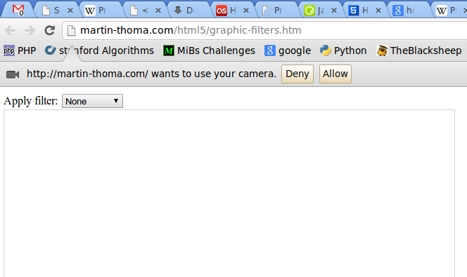
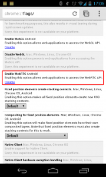

I begin to fall in love with JavaScript and HTML5. You can access your Webcam with JS! As an example, I've implemented some graphic filters.
Basics
HTML5
You need:
This is the bare minimum HTML code you need for valid HTML:
<!DOCTYPE html>
<html>
<head>
<title>Some title</title>
</head>
<body>
<video autoplay id="vid" style="display:none;"></video>
<canvas id="canvas" width="640" height="480"></canvas>
<script type="text/javascript" src="graphic-filter.js">
</script>
</body>
</html>
JavaScript
Important functions / datastructures are:
- getUserMedia: see support by browsers
- ImageData: WTF? The image is a ONE dimensional array of integers in 0, ..., 255. So the first 4 array elements describe the pixel (0|0) with its RGBA value
A starting point for your code might be:
'use strict';
var video = document.querySelector("#vid");
var canvas = document.querySelector('#canvas');
var context = canvas.getContext('2d');
var localMediaStream = null;
var onCameraFail = function (e) {
console.log('Camera did not work.', e);
};
setInterval(function snapshot() {
if (localMediaStream) {
context.drawImage(video, 0, 0);
var width = 640;
var height = 480;
var imgDataNormal = context.getImageData(0, 0, width, height);
var imgData = context.createImageData(width, height);
// convert image to grayscale
for (var i = 0; i < imgData.width*imgData.height*4; i += 4) {
var r = imgDataNormal.data[i + 0];
var g = imgDataNormal.data[i + 1];
var b = imgDataNormal.data[i + 2];
var brightness = (3*r+4*g+b)>>>3;
imgData.data[i] = brightness;
imgData.data[i+1] = brightness;
imgData.data[i+2] = brightness;
}
context.putImageData(imgData, 0, 0);
}
}, 500);
navigator.getUserMedia = navigator.getUserMedia || navigator.webkitGetUserMedia || navigator.mozGetUserMedia || navigator.msGetUserMedia;
window.URL = window.URL || window.webkitURL;
navigator.getUserMedia({video:true}, function (stream) {
video.srcObject = stream;
localMediaStream = stream;
}, onCameraFail);
console.log(localMediaStream);
Interactive example
You need a webcam for this:
Open demonstration in new window
This is what it should look like:
{kind=link}

And it gives these results:
{kind=link}
{kind=link}
{kind=link}
By the way, you can check if a website is currently accessing your webcam (with Google Chrome):
{kind=link}
If you want to use these examples from your Android phone, you might have to enable getUserMedia. To do this, enable "Web RTC" in "chrome://flags":
{kind=link}
